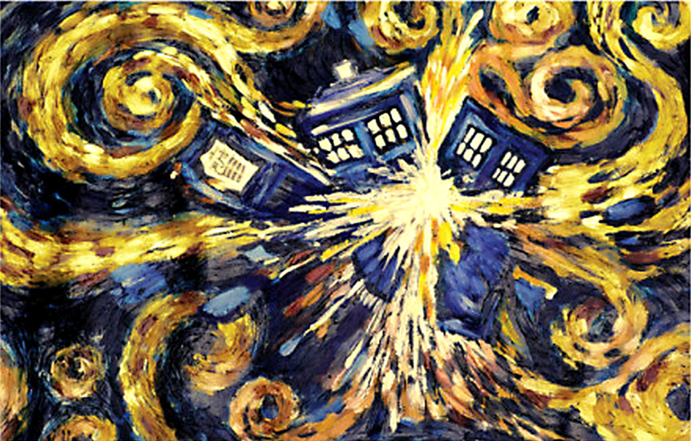

A T.A.R.D.I.S.
TARDIS (acrônimo de Time and Relative Dimension(s) in Space) ( em português: Tempo e Dimensão Relativas no Espaço) é a nave espacial e máquina do tempo no seriado de ficção científica da BBC Doctor Who:.
A TARDIS pode levar seus passageiros para qualquer lugar no tempo e espaço.
Embora seu exterior pareça com uma cabine de polícia de Londresdevido a um defeito irreparável no sistema de camuflagem (na sétima temporada o Doutor afirma que há como reverter, mas ele também afirma que perderia a TARDIS muito facilmente e também afirma que ja se acostumou com o jeito de sua TARDIS), seu interior é muito maior do que o exterior (essa é a tecnologia dos Senhores do Tempo), contendo inúmeras salas.
A TARDIS que o Doutor pilota é um modelo antigo do tipo 40.
Ela foi produzida pelos Senhores do Tempo e depois roubada pelo Doutor em Gallifrey (planeta natal dos Senhores do Tempo e do Doutor).
Ela é muitas vezes chamada de "A TARDIS" pois ela é única no universo devido a extinção dos Senhores do Tempo.
Uma das principais características da TARDIS é que o interior existe em uma dimensão diferente da do exterior.
A principal aplicação deste conceito de "maior por dentro do que por fora" (bigger on the inside).
Uma característica de todas as TARDISes é sua capacidade de camuflar-se, uma vez pousada.
Se funcionasse corretamente, o circuito camaleão avaliaria o ambiente pouco antes da chegada e mudaria o exterior para se parecer com algo em comum com a paisagem.
Em uma ocasião depois de deixar Londres, em 1963, o circuito camaleão da TARDIS do Doutor parecia não ter nenhum controle sobre a mudança.
No entanto, com o funcionamento normal do mecanismo, ele seria programável a partir de um teclado no console principal da TARDIS.
Mais tarde, novos modelos tiveram uma maior flexibilidade.
A capacidade do Mestre, de produzir uma coluna em ambientes às vezes contraditórios como o Projeto Pharos ou Heathrow, bem como declaração do Monge de que escolheu deixar sua TARDIS como um sarcófago talvez indique que os circuitos de modelos posteriores poderiam ser operados manualmente.
Esta ideia foi secundada quando o Doutor entrou na TARDIS do Monge e mudou sua aparência de um pilar de pedra para uma caixa de polícia idêntica a sua própria TARDIS.
[1]
Em Logopolis, fica implícito que o Doutor pode escolher o que a TARDIS seria.
Ele mesmo demonstra a Adric como transformar a TARDIS em uma pirâmide, se o circuito camaleão estivesse funcionando corretamente.
TARDISes são máquinas incrivelmente complexas.
A natureza da sua construção era tão complicada que foi dito que eram cultivadas ao invés de construídas, simulando assim um processo biológico, embora não seja claro se isso indica que a máquina seja biológica por natureza ou se é simplesmente complicada e complexa que parece imitar os processos de uma entidade biológica.
[1]
Devido ao nível de complexidade em sua construção, a TARDIS tinha um grau de inteligência, e poderia agir de forma independente, como quando a TARDIS do Doutor ressuscitou Grace Holloway e Chang Lee, ou quando alguém olha para o coração da TARDIS.
[1]
TARDISes muitas vezes, “lamentam” a morte de seu Senhor do Tempo, chegando a cometer suicídio por voar em um sol ou arremessando-se no Vortex do Tempo.
O quinto Doutor alegou que havia “um cemitério de elefantes” de TARDISes em algum lugar no fim dos tempos.
[1]
Por ter essas características orgânicas, o Doutor considera sua TARDIS como estando viva.
Ele fala e acaricia partes da TARDIS quando a opera.
Ele fala dos problemas mecânicos como sendo condições médicas, ao exemplo de “indigestão”.
Uma vez ele comentou que aTARDIS era “mais como uma pessoa”.
[1]
Quando a matriz da TARDIS do Doutor foi colocada dentro do corpo de uma mulher, mostrou-se que são seres sensíveis com grau de livre arbítrio.
A TARDIS disse em seu corpo humano: “Todas as minhas irmãs estão mortas.
” - isto implica que todas as TARDISes eram do sexo feminino.